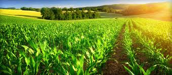
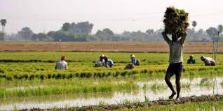

<body>

<center> 
  <h1> Data Analyis : (1) Agriculture Prediction </h1>
  </img>
  </img>
  </img>
  <h2> Analyse the co-factors (like - rainfall,temperature etc ) related to agriculture </h2>
  <hr/>
</center>
  <h3><font color="GREEN"> Used Programming Languages :</font> [1] Python , [2] R </h3> 

  
<center>
<table border="2" width="100%"> 
 
  <tr>
    <td><br> [1] Rainfall </td>
    <td><br> <a href="https://drive.google.com/file/d/11hwQqJHCO0aEBKGPbvW4CJXoBCv_F-s5/view?usp=sharing">Rainfall Data [ Download ]</a></td>
    <td><br> coding section </td>
    <td><br> <a href="1.html">Images </a></td>
  </tr>
  
  <tr>
    <td><br> 2,1 </td>
    <td><br> 2,2 </td>
  </tr>

</table>
</center>

</body>  
